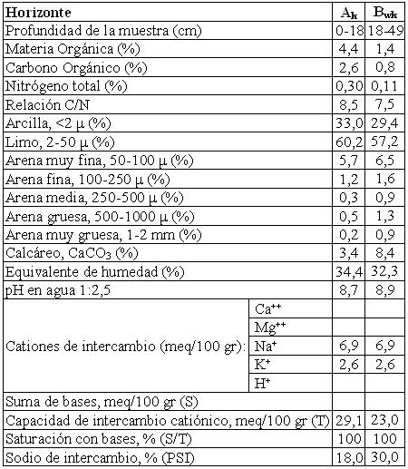

Endoacuol típico, limosa fina, mixta, térmica
Capacidad de uso: VIws
Es un suelo imperfectamente drenado a mal drenado desarrollado sobre sedimentos eólicos en los sectores deprimidos con influencia de la capa freática ubicados al norte de la localidad de Río Primero. Está severa a gravemente limitado por el drenaje, muy fuerte alcalinidad sódica desde la superficie y el drenaje. Presenta un horizonte superior A de unos 18 cm, de color oscuro, con textura franco arcillo limosa con 33% de arcilla, moderadamente alcalino. Con moteados escasos a fuertes. Sigue a continuación un horizonte subsuperficial Bw normalmente afectado por la capa freática, fuertemente alcalino con textura franco arcillo limosa con 29%que se extiende hasta 49 cm. La capa freática en el momento del muestreo de campo se encontraba a la profundidad indicada precedentemente.
Descripción del perfil típico:
Un perfil representativo de este suelo fue descripto a 21 Km al NNE de la localidad de Río Primero, departamento del mismo nombre, provincia de Córdoba.
Ak 0-18 cm; color en húmedo pardo grisáceo muy oscuro (10YR3.2), franco arcillo limoso, estructura en bloques subangulares medios moderados, friable en húmedo, plástico, ligeramente adhesivo, pH 8,7 raíces comunes, límite inferior claro suave.
Bwk 18-49 cm, color en húmedo pardo oscuro (10YR3/3); franco arcillo limoso, estructura en prismas irregulares medios, friable en húmedo, plástico, adhesivo, pH 8,9, barnices comunes de arcillas sódicas, finos, raíces escasas, saturado por agua desde la base del horizonte.
Cuadro Nº19
Datos analíticos Serie LA ARGENTINA
Situación: Latitud: 31º11’S Longitud: 63º29’O Altitud: 180 m.s.n.m.

|